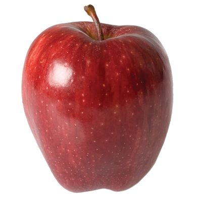

Profilo di Giovanni Mela
Buongiono, mi chiamo Giovanni e son sei anni che mi occupo di riparazione danni
Dati personali
Giovanni Mela
Via Cose Rotte 26, Torrone
3477784839
giovanni.mela@apple.com

Competenze informatiche
HTMLHyper Text Markup Language
C++
C# C Sharp
JAVA
CSSCascading Sheet Style
Esperienze di lavoro
Purtoppo in realtà non ho mai lavorato
Interessi personali
- Astronomia:
Adoro passare la giornata a rimirar le stelle, anche quando non si vedono
- Cammelli volanti
Li ricerco in ogni dove ma ancora non ne ho trovati, ne sono comunque il maggior esperto mondiale
- Mele
Mi piacciono tutte dalle Golden alle Fuji
- Altalene
Sono una perfetta metafora della vita
Links
Ormai sai tutto di me clicca qui per tornare alla pagina principale